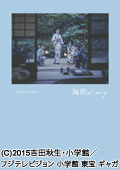

最新更新情报
★tv情报
fdsfsdfesd
sfassafs
sfsfs
ドラマ公式サイト＞＞＞
出演決定！＞＞＞
記者会見レポート＞＞＞
受赏历史
2016年第39回日本电影大奖最佳女配演员
"海街diary 2015年"
映画
"2019年初春公开"NEW!
"sdfsdfs"
监督：位电大
"peiji:eeee"
公式サイト＞＞＞
製作発表会見レポート＞＞＞
クランクインレポート＞＞＞
2018年11月1日（木）公開 NEW!! 監督：三島有紀子
配給：20世紀フォックス映画、KADOKAWA
公式サイト＞＞＞
出演決定！＞＞＞
2018年6月22日（金）公開
「ウタモノガタリ-CINEMA FIGHTERS project-」『カナリア』
監督：松永大司
配給：LDH PICTURES
※6月4日（月）～24日（日）国際短編映画祭ショートショート フィルムフェスティバル ＆ アジア内でプレミア上映決定！
公式サイト＞＞＞
公開記念舞台挨拶レポート＞＞＞
2018年5月25日（金）公開
「友罪」
監督：瀬々敬久
配給：ギャガ
公式サイト＞＞＞
出演決定！＞＞＞
完成披露試写会レポート＞＞＞
公開記念舞台挨拶レポート＞＞＞
大ヒット御礼ティーチインイベントレポート＞＞＞
TV
※番組放送日時は、急遽変更・中止になる場合があります。
詳しくは、各放送局の公式HPにてご確認ください。
「グッド・バイ」 NEW!!
※7/14（土）O.Aスタート！
テレビ大阪 毎週土曜24：56～25：26
BSジャパン 毎週土曜24：00～24：30
公式サイト＞＞＞
出演決定！＞＞＞
記者会見レポート＞＞＞
土曜プレミアム・映画「海街diary」
06/09（土）21：00～23：35
フジテレビ
金曜ロードSHOW!「22年目の告白 ―私が殺人犯です―」
06/08（金）21：00～22：54
日本テレビ
雑誌
06/13（水）
「anan」No.2106
写真集
◆2015/05/22（金）
写真集「海街diary」
著者：瀧本幹也
定価：本体3,200円（税抜）
判型：A4判・上製（クロス装）
総頁：104頁（オールカラー）

◆2011/06/30（木）
CM NOW別冊「夏帆写真集 帆風だより 2006-2011」
価格：2,100円（税込）
出版社: 玄光社
http://www.genkosha.com/kaho/
◆2010/08/04（水）
「夏帆写真集 Breeze with きな子」
価格：2,835円（税込）
サイズ：B5変型ハードカバー
頁数：128頁
ISBN：978-4-903620-77-0
★スターダストショッパーズにて販売中！
DVD
映画「伊藤くん A to E」DVD&Blu-ray
発売日：2018年6月20日（水）
価格：5,800円(税抜/Blu-ray)
価格：4,800円(税抜/DVD)
発売・販売元：バップ
★スターダストショッパーズにて販売中！
ドラマ「監獄のお姫さま」DVD&Blu-ray BOX
発売日：2018年3月23日（金）
価格：24,000円(税抜/Blu-ray)
価格：19,000円(税抜/DVD)
発売元：TBS
販売元：TCエンタテインメント
★スターダストショッパーズにて販売中！
映画「予兆 散歩する侵略者 劇場版」DVD&Blu-ray
発売日：2018年3月7日（水）
価格：5,200円(税抜/Blu-ray)
価格：4,200円(税抜/DVD)
発売・販売元：ポニーキャニオン
★スターダストショッパーズにて販売中！
ドラマ「伊藤くん A to E」DVD&Blu-ray BOX
発売日：2018年1月10日（水）
価格：17,800円(税抜/Blu-ray)
価格：13,800円(税抜/DVD)
発売・販売元：バップ
★スターダストショッパーズにて販売中！
ドラマ「架空OL日記」DVD
発売日：2017年10月18日（水）
価格：11,400円(税抜)
発売元：ポニーキャニオン
連続ドラマW「楽園」DVD
発売日：2017年5月19日（金）
価格：11,400円（税抜）
発売元：WOWOW
販売元：カルチュア・パブリッシャーズ
セル販売協力：TCエンタテインメント
映画「高台家の人々」DVD&Blu-ray
発売日：2016年12月21日（水）
価格：6,700円(税抜/Blu-rayスペシャル・エディション)
価格：5,800円(税抜/DVDスペシャル・エディション)
価格：3,800円(税抜/DVDスタンダード・エディション)
発売元：フジテレビジョン
販売元：ポニーキャニオン
ドラマ「ラヴソング」DVD&Blu-ray BOX
発売日：2016年10月26日（水）
価格：23,500円（税抜/Blu-ray BOX）
価格：19,000円（税抜/DVD-BOX）
発売元：フジテレビジョン
販売元：アミューズソフト
★スターダストショッパーズにて販売中！
映画「ピンクとグレー」DVD&Blu-ray
発売日：2016年7月8日（金）
価格：6,700円(税抜/Blu-rayスペシャルエディション)
価格：5,800円(税抜/DVDスペシャルエディション)
価格：4,700円(税抜/Blu-rayスタンダードエディション)
価格：3,800円(税抜/DVDスタンダードエディション)
発売・販売元：株式会社KADOKAWA
★スターダストショッパーズにて販売中！(特典：劇中生写真)
ドラマ「ディアスポリス -異邦警察-」DVD-BOX
発売日：2016年6月22日（水）
価格：11,400円（税抜）
販売元：エイベックス・ピクチャーズ
KERA・MAP#006 舞台「グッドバイ」DVD
発売日：2016年4月6日（水）
価格：6,190円（税抜）
発売元：株式会社キューブ
販売元：ポニーキャニオン
映画「海街diary」DVD＆Blu-ray
発売日：2015年12月16日（水）
価格：7,000円(税抜/Blu-rayスペシャルエディション)
価格：6,000円(税抜/DVDスペシャルエディション)
価格：4,800円(税抜/Blu-rayスタンダードエディション)
価格：3,800円(税抜/DVDスタンダードエディション)
発売元：フジテレビジョン
販売元：ポニーキャニオン
★スターダストショッパーズにて販売中！(特典：劇中生写真)
テレビ朝日開局55周年記念2夜連続ドラマスペシャル
「宮本武蔵」DVD＆Blu-ray
発売日：2014年12月3日（水）
価格：8,400円（税抜／Blu-ray）
価格：7,600円（税抜／DVD）
発売元：株式会社テレビ朝日
販売元：株式会社ポニーキャニオン
ドラマ「24時間女優－待つ女－♯1 夏帆」DVD
発売日：2014年9月17日（水）
価格：2,800円（税抜）
発売元・販売元：ポニーキャニオン
映画「パズル」Blu-ray＆DVD
発売日：2014年8月5日（火）
価格：4,700円(税抜／Blu-ray)
価格：3,800円（税抜／DVD）
発売元：株式会社キューブ
販売元：ポニーキャニオン
舞台「祈りと怪物～ウィルヴィルの三姉妹～」DVD
発売日：2014年6月18日（水）
価格：6,500円（税抜）
発売元：株式会社キューブ
販売元：ポニーキャニオン
★スターダストショッパーズにて販売中！
◆2010/08/20（金）
「夏帆DVD Breeze with きな子」
価格：3,150円（税込）
本編：約50分
発売・販売元：SDP

◆現在発売中
『OLカナのおじさん観察日記。』
『海の上の診療所』
『劇場版タイムスクープハンター 安土城 最後の1日』
『悪霊病棟』
『箱入り息子の恋』
『みんな！エスパーだよ！』
『任侠ヘルパー』
『カレ、夫、男友達』
『外交官 黒田康作』
『劇場版TRICK 霊能力者バトルロイヤル』
『「オトメン（乙男）」』
『イケ麺そば屋探偵 いいんだぜ！』
『P&Gパンテーンドラマスペシャル かるた小町』
『東京少女』
『うた魂(たま)♪』
『砂時計』
WEB
ショートムービー「あおいろなおし」主演
2018/03/30～
https://youtu.be/aYArRuMkyuw
※YouTube限定公開
「ザテレビジョン」
2018/01/05～
https://thetv.jp/news/detail/132872/
「シネマトゥデイ」
2017/12/24～
https://www.cinematoday.jp/news/N0097216
ドラマ「監獄のお姫さま」STARDUST OFFICIALSITEインタビュー
http://www.stardust.co.jp/interview/article/kaho/04.html
コメント動画＞＞＞
LEPSIM CINEMA TRIBUTE BOOK『Simple is…』vol.4
http://www.dot-st.com/cp/lepsim/simple-is4
映画「予兆 散歩する侵略者 劇場版」STARDUST OFFICIALSITEインタビュー
http://www.stardust.co.jp/interview/article/kaho/04.html
コメント動画＞＞＞
Amazonオリジナルドラマ「東京ヴァンパイアホテル」主演
06/16（金）～
Amazonプライム・ビデオ
主演決定！＞＞＞
完成披露試写会レポート＞＞＞
予告動画＞＞＞
PV
2016年6月22日発売
レキシ
「最後の将軍 feat. 森の石松さん」
※「Vキシ」収録曲
https://youtu.be/DzQliZzLjqI
2016年1月6日発売
ASIAN KUNG-FU GENERATION
「Right Now」
※映画「ピンクとグレー」主題歌
https://youtu.be/IkyiAMO8U3I
CM
エイボン・プロダクツ株式会社「Dual Face」
公式サイト＞＞＞
ニュース＞＞＞
資生堂「INTEGRATE」
公式サイト＞＞＞
KDDI auライフデザイン
公式サイト＞＞＞
「au発表会 2017 Summer 第2弾」レポート＞＞＞
CD
Sweet Robots Against The Machine
ALBUM「３」 NEW!!
発売日：2018/7/18(水)
発売元：BETTER DAYS（日本コロムビア）
CD価格:￥3,000（税抜）
LP(2枚組)価格:￥5,500（税抜）
収録曲
M1.フューチャリズム（Futurism）
M2.ダキタイム（Dakitime）
M3.サセル体操（Gymnastics to make）
M4.覚えてはいけない九九（Do not remember 99）
M5.アニマル（Animal）
M6.非常識クイズ（Insane quiz）
M7.捨てられない街角（Boxes）
M8.レイディオ（Radio）
M9.集会（Assembly）
M10.かわいい（Kawaii）
（LPは1,2,4,6,9 Inst.verを収録）
※夏帆は、M2.「ダキタイム」M5.「アニマル」に歌唱参加
公式サイト＞＞＞